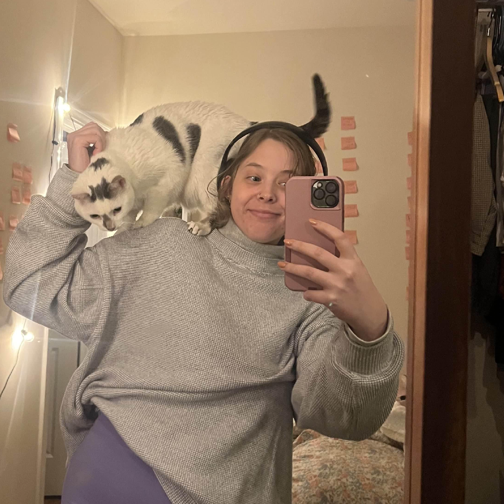
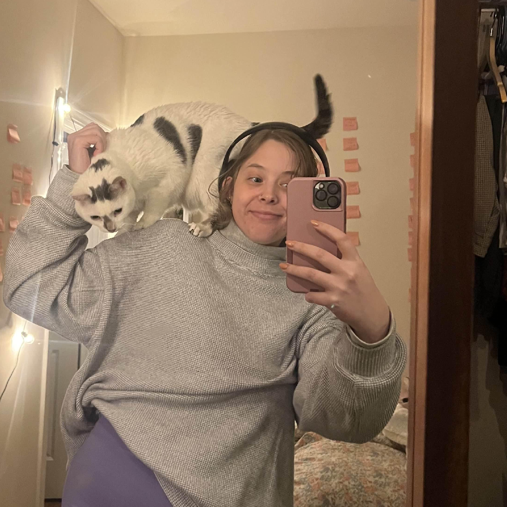

i'm erin
lead product designer
 

i design to feel something,
code to feel nothing,
and live somewhere in between.
working to make you feel 1% more human

FloLogic Mobile App Redesign
From one valve to an entire ecosystem’s legacy mobile app, working cross-functionally to deliver a sleek, modern user experience. I built a ecosystem - clarity for homeowners, power for property managers

Internal Support Tool Redesign
Redesigned FloLogic's internal support tool to consolidate fragmented workflows. Moved CS and Engineering from 5 scattered programs into a single source of truth with AI-powered automation and location-based navigation.

Circadia - AI Powered Bed-Time App
A bedtime app that helps you wind down with astrology, dream journaling, and manifestation rituals, all synced to the moon.
Teamu
AI social media platform looking into closing the increasing isolation, solving the loneliness epidemic. Conducted UX research, competitive analysis.

Solving the Loneliness Epidemic
Teamu transforms passive social interaction into meaningful collaboration. Through AI-driven idea generation, users can swipe on project concepts, join community boards, and turn ideas into action.

FloLogic Dashboard MVP
Built a working dashboard MVP for B2B sales demos, transforming FloLogic's consumer-focused mobile app into property management software. Delivered clarity for property managers across multiple devices and locations.

Gateway Connect Provisioning
Streamlining the setup experience for Gateway Connect devices - a complete redesign focused on reducing friction and improving success rates for first-time device setup.

Remote I/O Configuration
Simplifying complex industrial device setup - designed an intuitive interface for configuring industrial remote I/O devices, making technical complexity accessible to field technicians.